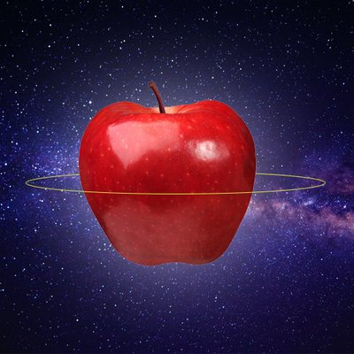

תפוחלל
מכתב לבעלי לעתיד
אני עייף, אני מאוד עייף. שום דבר בחיים לא מאפשר לי לצאת מהעייפות הקיומות שבה אני שרוי. היא מקיפה אותי. כל חדר שבו אני נמצא מלא בה, נראה שהיא מגיעה עד התקרה. כמה שאני מנסה, אני לא יכול להרים את ראשי מעליה. כשאני מסתכל מהחלון נראה שהיא מציפה את כל העיר, כמו נוזל חסר צבע, כיאה לתחושת חוסר המשמעות אותה הוא מייצג. כמה שאני יכול לראות, הנוזל מגיע עד לגגות הבניינים השכנים, ואולי אפילו יותר גבוה. אולי עד הסטרטוספרה. אולי מעל. אני צריך שירוקנו אותו מהעולם. הרבה זמן חיכיתי למישהו שייפתח את חור הניקוז של העולם ויישאב לתוכו את כל הנרפות, התשישות, והרדימות הקיומית שאני צריך לפלס בתוכם בכל תנועה שאני עושה.
המישהו הזה לא היה אתה. אבל אתה כן עזרת, הזזת אותי כשהנוזל היה לי צמיגי כל כך שלא יכולתי לנוע בתוכו לשום כיוון. משכת אותי איתך בקלילות כאילו אינך שם לב בכלל לנוזל הלא-ניוטוני הזה.
ועכשיו, לא נותר בך עוד כוח. תמיד הכבדתי עליך, ונראה שזה נתן את אותותיו. שרירייך היפים נרפו, והלהיטות בה הזזת את חיינו קפאה. לא, אל תבקש ממני עדיין. זה עדיין תורך. בוא נמשיך כמו קודם. תישא אותי. תבחר לאן, תן לי להמשיך להביט בפליאה בדרך בה אתה אוחז בידי ומריץ אותנו דרך החיים. לא משנה לאיפה, תמיד הודהמתי ממה שגרמת לנו להשיג, אתה – בתור הנווט, הנהג והדלק, ואני – המטען.
מה הוא גורם לך להרגיש? האם גם הוא מעריץ אותך כמו שאני הערצתי אותך? אולי אתה לא צריך את זה. אולי חיפשת פשוט מטען קל יותר. או, אולי, האם הוא עכשיו נושא אותך?
שנים הרגשתי שצריך לפעול יותר בשביל שנוכל להמשיך. קיוויתי שאתה תעשה את זה. כמו שעשית את כל הדברים שהיו קודם. למה הפסקת? ברור שלא נגמרה לך האנרגיה. ראיתי אותך משקיע הרבה אנרגיה במציאת דרכים מורכבות להתחמק ממני. ראיתי אותך משתמש בה כדי לבנות כספת בראש שלך כדי להסתיר דברים ממני. לא היה לי אכפת אם הכספת הזאת לא הייתה כה כבדה, וכה מעיקה, עד שנראה שהפסקנו לנוע.
בוא נשכח מזה. בוא נשרוף את כל המטען הזה שנוסף עלינו. נזרוק את כל מה שצברנו הצידה. תיקח שוב רק אותי. זוכר כמה אני קל? זוכר כמה הסכמתי ללכת לכל מקום שרצית? הייתי המטען המושלם.